说明：累计服务指南
🌟累计服务功能上线记录
|
上线时间 |
功能说明 |
|---|---|
|
20221116 |
注意：基于金融与Zeus达成的一致，部分金融业务不做Zeus功能迭代，上线功能不包含的业务空间有：48、49、68、73、108及下的子空间（110、111、112、113、114、115、116、117、124、134、148、151、158）、109。 1、增加最大值、最小值累计函数 入口：新增累计因子->累计类型，可选择最大值、最小值 函数逻辑：在累计周期内取最大值和最小值，默认值为-9999.0，此外对实现逻辑做说明： 1）如果累计周期单位是自然日、自然周，最大值、最小值是按照实际的累计时间范围内进行统计的。比如累计A的累计逻辑是：取2个自然日 Price的最大值，当前时间是2022-11-16 14:00:00，那累计因子的取值逻辑是 取：2022-11-15 00:00:00至2022-11-16 23:59:59 Price的最大值。 2）如果累计周期是非自然日、自然周即正常的年、月、日...，由于计算资源成本，在实现逻辑上会有周期范围的扩大（扩大千分之一），比如累计因子B的累计逻辑是：取2日Price的最大值，那累计因子的取值逻辑是：2022-11-14 14:00:00 往前推（（2日=172800秒）/1000=172.8秒）至2022-11-16 14:00 ，即累计周期被扩大了千分之一。 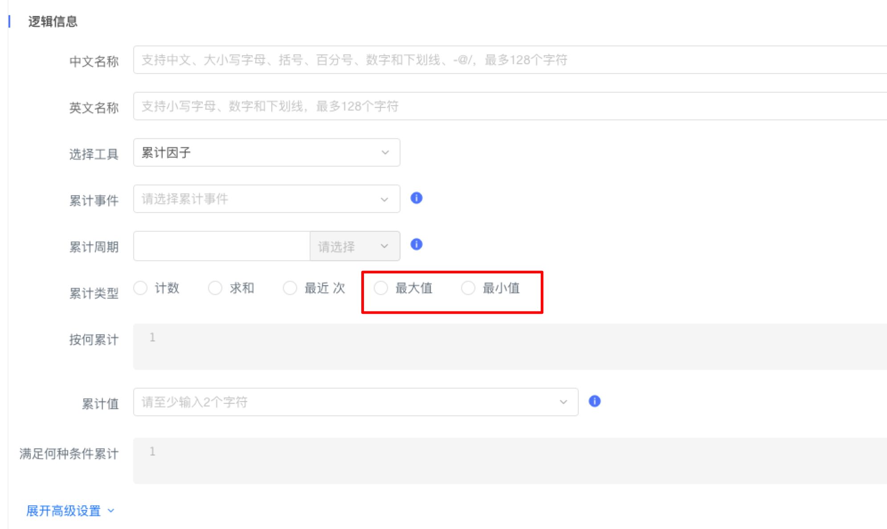 2、读累计条件设置 增加“无”读累计配置项：如果不展开高级设置，自行配置，系统将自动默认未设置读累计条件。 读累计条件是累计高级配置项，本期上线前默认读写累计条件一致，上线后需用户在高级配置中选择读累计条件设置，请各位用户特别注意。这里对读累计条件的作用做解释： 如下图：设置读累计条件即为满足读累计条件的时候才会真正请求累计服务返回当前在累计周期内累计到的值（次数/求和/最近几次明细..），否则返回默认值null，如果将读累计条件设置成“无”，则任意请求都能取到当前累计到的实际值（注意不是写累计喔，是取到当前的累计值），从策略感知上，同一个累计因子 读累计条件为“无”的 要比设置读累计条件的，实际读取到累计因子值的范围更大（因为会有一部分请求不满足读累计条件 而请求不到累计因子实际值）。 
3、累计查询（持续优化中） 将读写累计查询入口合并（短期内老读写累计查询入口仍保留，预计12月初将读累计查询、写累计查询菜单下掉，只保留本次新增的累计查询），累计查询功能如下： 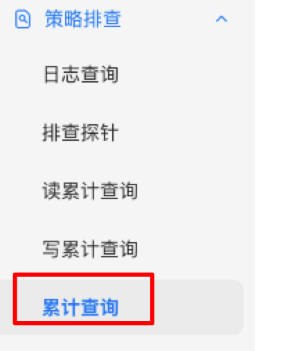 1）支持读写累计查询在一个页面切换。 2）支持读写累计离线查询，最多可支持1000条明细的查询，查询结果请关注【Scorpio累计服务】应用号，查询结果可点击累计明细文件，（注意：只有将累计因子迁移到新新累计服务中的累计因子才支持累计离线查询，累计服务迁移是由研发统一迁移，无需策略操作，迁移前将会主动联系各相关用户。）
累计明细中包含以下字段：
3）查询结果：
4、恢复累计周期自然日、自然周的选择入口。 |
|
20220914 |
1、累计回溯下线 由于当前回溯有限，且回溯准确性难以保障，因此对回溯功能短期下线，预计2023H1逐步回归。累计因子回溯下线后对您的影响： 1）策略验证：规则回溯->新建回溯->去掉累计因子线上回溯入口。 2）累计因子详情：在累计因子状态字段旁去掉 【累计回溯】入口。 3）对存量累计回溯任务：只可查看回溯内容，但不可对任务再复制。 2、累计因子配置额外字段下线 经前期调研，【额外字段】是低使用率高成本字段，增量累计因子将不允许添加该字段，存量已配置该字段的累计因子可查看但不可编辑。 |


一、服务定位
定位：累计服务是服务于风控策略、算法对时序类数据高效加工并应用在Zeus实近离风险防控场景中的数据解决方案。
*注意：累计服务当前只服务于应用在Zeus的使用场景，暂不对外单独提供服务。
使用场景：对某一周期的业务请求 计数、求和、取最近几次、求最大值/最小值。
-
计数：对某一周期内同一主体的客体计数，比如，累计最近1天内同mobile登录的userid的个数
-
求和：对某一周期内同一主体的客体求和，比如，累计近1周内同一userid下的支付总额
-
最近几次：对罗列某一周期内同一主体的客体详情，（当前仅支持最近100次的累计）比如，累计最近1月同一userid最近5次所在城市的信息
-
最大值/最小值：对某一周期内同一主体的客体做比较，取最大值/最小值，比如，累计最近1自然周内同一userid退款金额最大值/最小值
二、累计计算原理
为便于大家更好的理解累计的计算原理和调用链路，对累计服务的上下游数据依赖、配置依赖、及累计服务计算原理进行说明。累计服务分为写和读两个过程：
写累计：即按照累计的计算逻辑对符合条件的请求记录到累计服务中，累计服务经过计算明细给出累计聚合值。
读累计：即在执行规则逻辑时读取满足读累计条件的累计主体此刻的值，读累计结果的应用通常是在zeus以累计因子的形态应用在规则中。
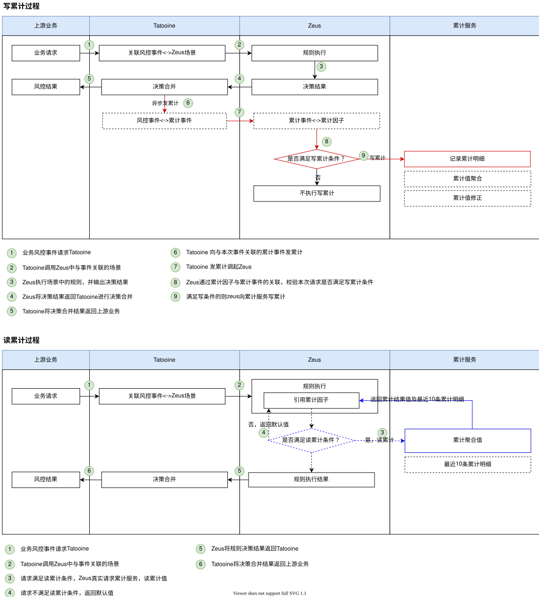
写累计说明：
-
风控事件与累计事件关联：仅限于通过Tatooine接入Zeus的业务，事件关联是为了将具体的业务请求与计入累计因子的请求来源做绑定。
事件与累计事件的关联配置
事件与累计事件关联的配置入口：https://hansolo.vip.sankuai.com/#/eventManageList
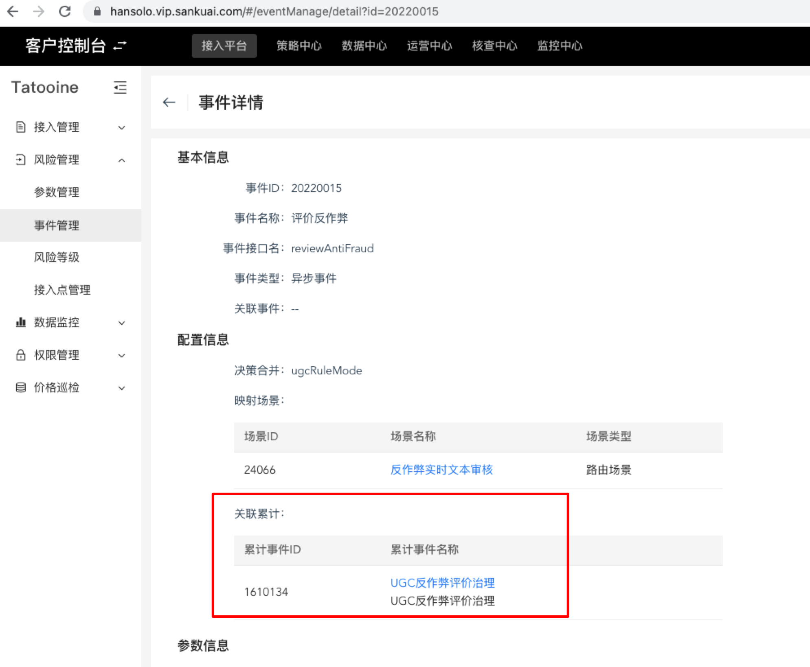
*非zeus接入的业务，使用累计服务需要在每个请求加上累计因子的ID （具体字段待确认）
-
是否满足写累计条件：即累计因子配置中的满足何种条件累计。
读累计说明：
-
读累计条件校验：即在zeus规则中引用累计因子时，调用累计服务读取累计当前值，注意：如果设定了读累计条件则只有满足读累计条件的请求才能获取到累计值，否则均返回默认值"null"。
三、累计因子配置与应用
🚩快速上手
从操作层面，累计因子配置与应用步骤可分为：
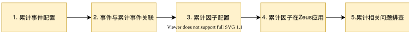
操作演示
-
step1 ：创建累计事件
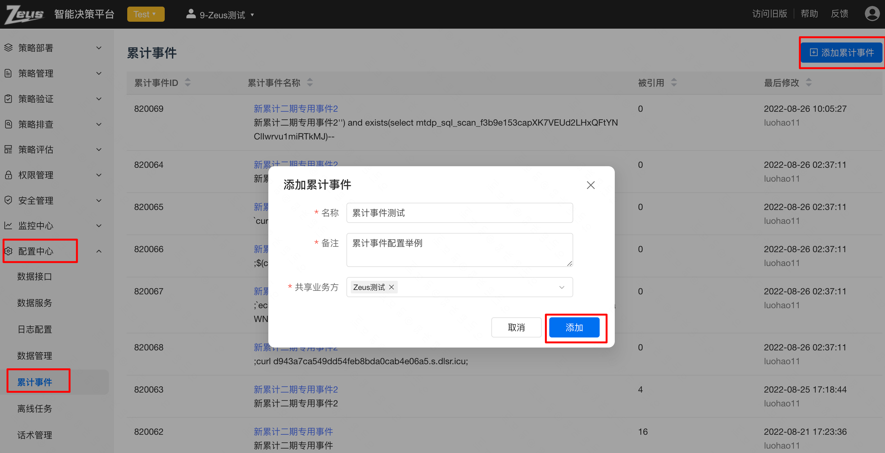
-
step2 ：风控事件与累计事件关联


-
step3 ：配置累计因子
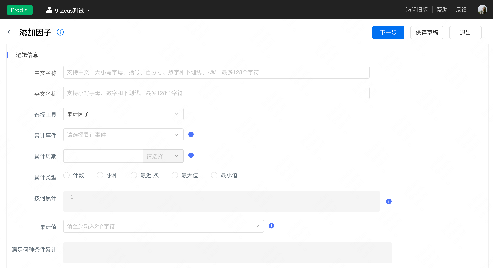
-
step4 ：累计因子设置上线
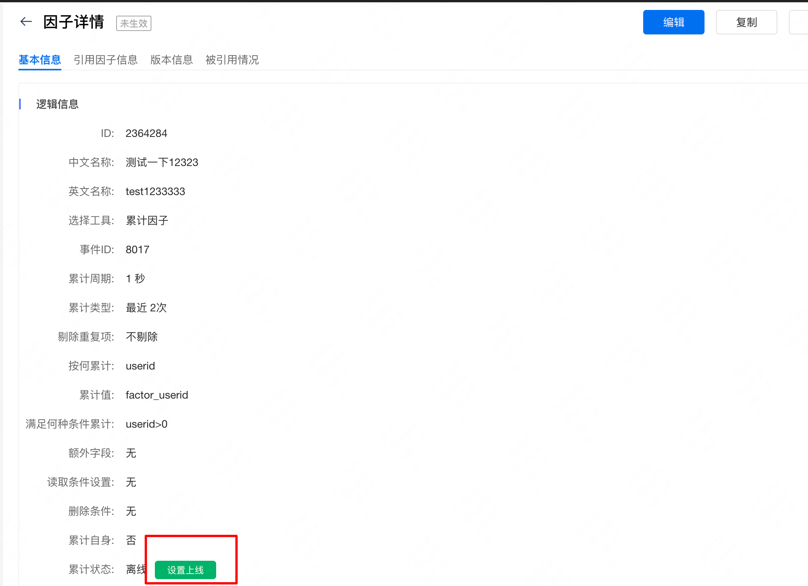
-
step5 ：如有累计因子相关问题，累计排查
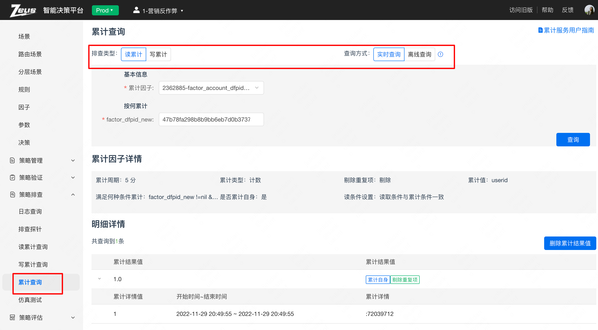
3.1 累计事件配置
首先区分事件与累计事件的概念：
事件：业务活动中用户的风险行为节点，详情可参考Tatooine事件的理解
累计事件：是对多个同类似业务的事件的管理，一个/多个事件对应一个累计事件。
事件-累计事件-累计因子的请求链路（图文 fromTatooine事件的理解）
-
请求通过事件进入Zeus会触发该事件所关联的累计事件（可关联多个）。
-
每个累计事件下管理了一组累计因子。累计因子在配置的时候可以选择对应的累计事件，完成配置后就被添加到该累计事件下。
-
请求触发对应的累计事件，即遍历累计事件下所有的累计因子，符合写条件的，累计因子便会执行写入，不满足写条件的则无事发生。
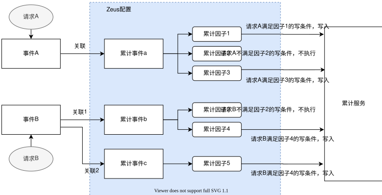
操作：
|
功能 |
说明 |
图例 |
|---|---|---|
|
新增累计事件 |
累计事件配置入口：Zeus->配置中心->累计事件->添加事累计事件 说明：配置累计事件需对累计事件的业务含义、及共享方进行定义。共享方：zeus允许对同业务群的业务空间共享。共享时需注意，共享方需有与该累计事件绑定的事件，累计因子才会真正累计到值。 举例：1-反作弊将累计事件【1610094-活动事件】累计事件分享给同业务群的3-用户账户，而 【1610094-活动事件】只关联了交易活动相关事件，那么在3下基于【610094-活动事件】累计事件加工的累计因子不会对本业务的请求做累计。 因此，累计事件的共享场景是 累计事件的事件来源于多个业务，且需要在事件配置中 对事件与累计事件绑定。 |
|

3.2 累计事件与事件关联
如3.1所述，事件需与累计事件产生关联关系才可有真实的业务请求。
操作：
|
功能 |
说明 |
图例 |
|---|---|---|
|
累计事件与事件关联 |
累计事件配置入口：配置中心->累计事件->添加事累计事件
2. 关联配置：对要关联的事件编辑，在关联累计中选择要关联的累计事件，一个事件允许关联多个累计事件。 |
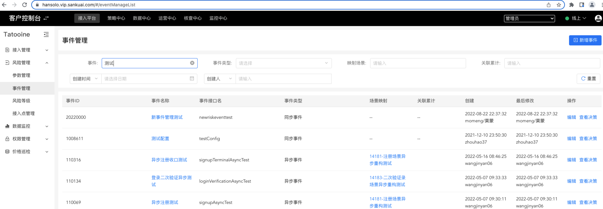 2. 配置：编辑事件，关联累计事件 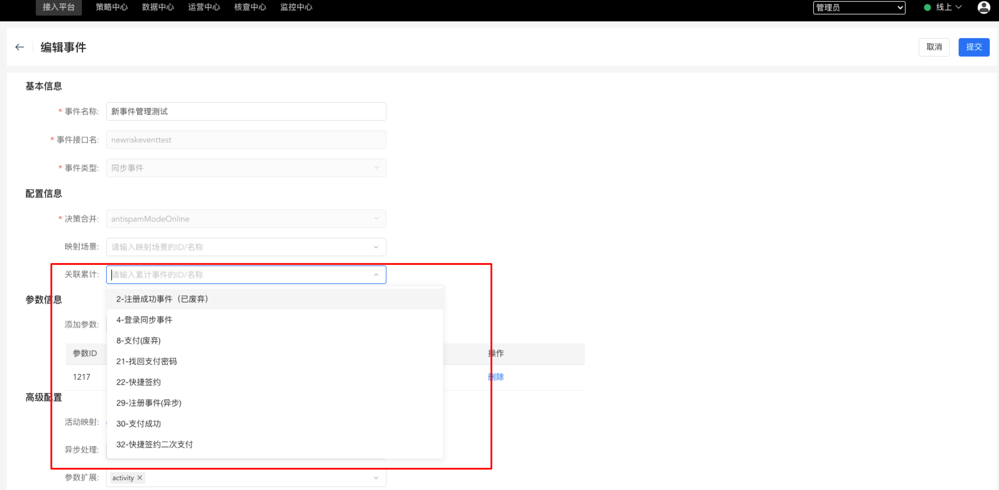 |
3.3 累计因子配置
|
功能 |
说明 |
图例 |
|---|---|---|
|
累计事件与事件关联 |
1.入口：Zeus->因子->添加因子->累计因子 2.配置说明：
|
|


3.4 累计因子排查
|
功能 |
说明 |
图例 |
|---|---|---|
|
累计事件与事件关联 |
1.入口：Zeus->策略排查->累计查询 2.配置说明： 1）累计查询为将读累计和写累计查询功能集成的入口，支持读累计/写累计查询、实时/离线查询在一个页面切换（后续读累计查询、写累计查询单独入口将逐步下线）。 读累计查询和写累计查询有什么区别？ 读累计查询是指按照规则执行时读取到的累计因子值所对应的累计明细详情（实时查询是从当前时点的读累计，离线查询是所选时间点往前推一个累计周期的累计明细详情），写累计查询是指在所选时间段实际被写入的累计明细，同一个请求读累计和写累计明细可能不同，比如，当次请求不满足读累计条件则读累计明细将为空，但写累计明细可能存在。 此外基于成本和查询效率考虑，读写累计明细展示上做了以下限制：
2）查询明细： 读累计查询查询到的是累计客体的值，以图所示，累计因子factor_account_dfpid_login_userid_cnt_5min的key为userid 则累计明细为userid的取值，共1条。 而写累计查询查询到的是某一事件段写入累计请求的详情。 3）支持读写累计离线查询，最多可支持1000条明细的查询，查询结果请关注【Scorpio累计服务】应用号，查询结果可点击累计明细文件，（注意：只有将累计因子迁移到新新累计服务中的累计因子才支持累计离线查询，累计服务迁移是由研发统一迁移，无需策略操作，迁移前将会主动联系各相关用户。） 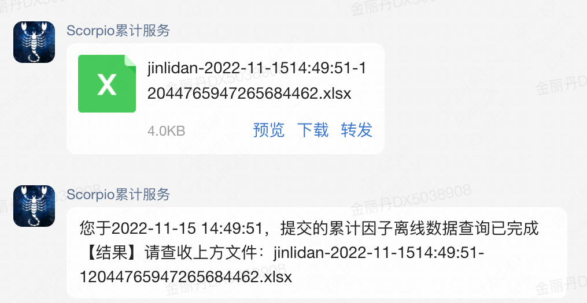 累计明细中包含以下字段： 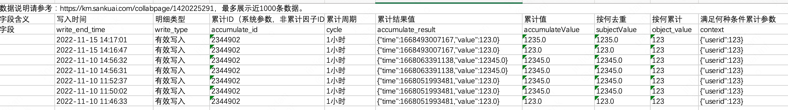 根据读写累计查询排查累计相关问题时需特别注意累计因子中是否配置了“累计自身”，如果配置了且当次请求满足写累计条件，如果是计数zeus会自动将累计值加1，但如果此次请求不包含在累计事件中，累计明细将不会记录，会出现实际累计明细数和累计结果值相差1的情况。 |
入口：策略排查->累计查询
读累计查询 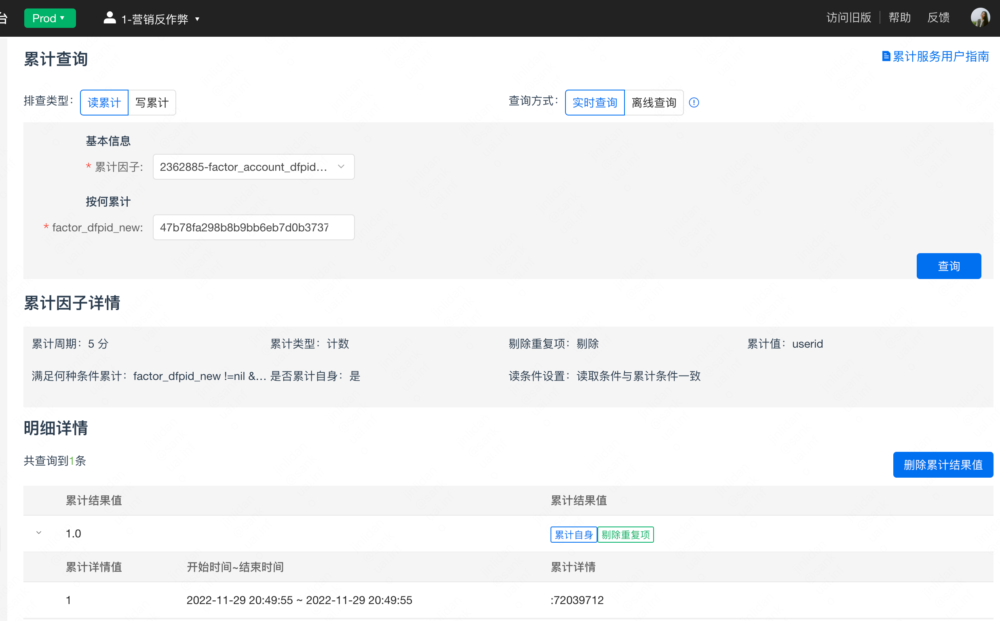 写累计查询 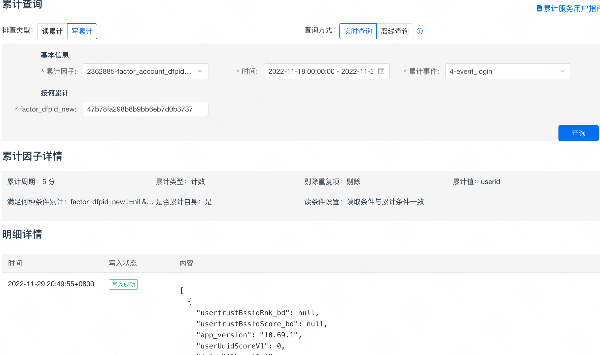 |

四、常见问题
4.1 累计因子是否支持跨风控事件累计？
支持，累计哪些风控事件是通过与累计事件的关联关系决定的，如果一个累计因子需要跨事件累计只许在Tatooine事件管理中将对应的风控事件与累计事件绑定就可以了。事件管理入口：https://hansolo.vip.sankuai.com/#/eventManageList
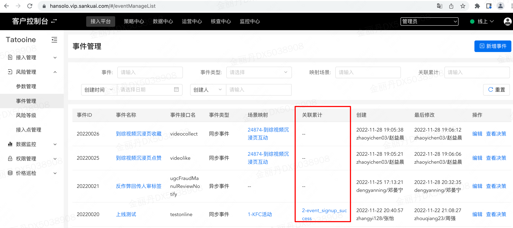
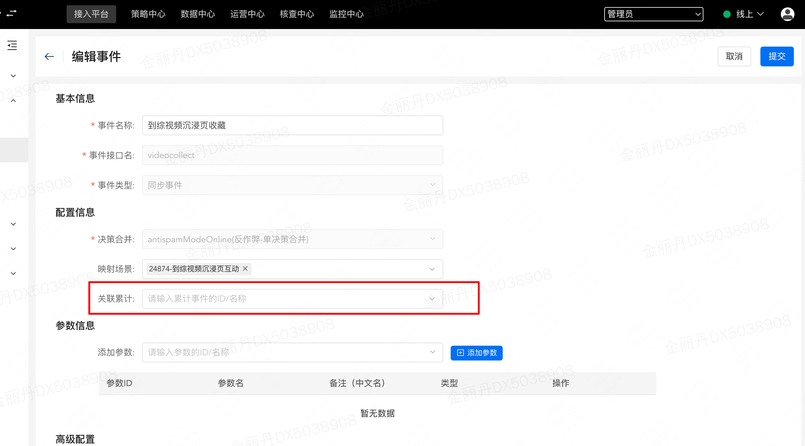
4.2 满足何种条件累计、读累计条件设置、累计值中都支持哪些参数/因子的配置？
满足何种条件累计、读条件设置、累计值都仅支持在zeus已配置的参数/因子，即使上游有传值也需先将参数在zeus配置好。但特别注意，为避免调用逻辑混乱，这几种条件都不支持scenceid risklevel的配置。
4.3 我所属的业务不是通过Tatooine接入Zeus的，想使用累计因子应该怎么做？
可通过调用zeus的上游业务在调起zeus时传入事件id的方式使用累计服务。
如有疑问请联系：
研发 luohao11
产品 jinlidan